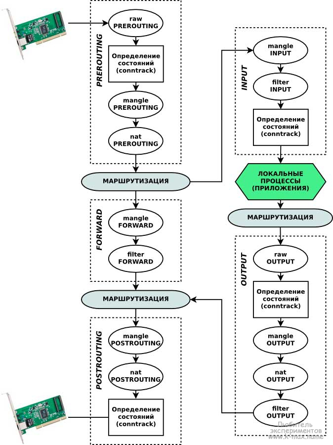

Доброго времени, читатели и гости моего блога. C этой статьи начну серию статей о подсистеме Netfilter/iptables в Linux. В данной статье приведу основные понятия работы netfilter в Linux. Для понимания данной темы, обязательно советую ознакомиться со статьями Основные понятия сетей, Настройка сети в Linux, диагностика и мониторинг и Настройка и управление сетевой подсистемой Linux (iproute2).
Введение и история
Netfilter — межсетевой экран (он же, брандмауэр, он же файерволл, он же firewall...) встроен в ядро Linux с версии 2.4. Netfilter управляется утилитой iptables (Для IPv6 — ip6tables). До netfilter/iptables был Ipchains, который входил в состав ядер Linux 2.2. До ipchains в Linux был так называемый ipfw (IPV4 firewal), перенесенный из BSD. Утилита управления - ipfwadm. Проект netfilter/iptables был основан в 1998. Автором является Расти Расселл (он же руководил и прошлыми разработками). В 1999 г. образовалась команда Netfilter Core Team (сокращено coreteam). Разработанный межсетевой экран получил официальное название netfilter. В августе 2003 руководителем coreteam стал Харальд Вельте (Harald Welte).
Проекты ipchains и ipfwadm изменяли работу стека протоколов ядра Linux, поскольку до появления netfilter в архитектуре ядра не существовало возможностей для подключения дополнительных модулей управления пакетами. iptables сохранил основную идею ipfwadm — список правил, состоящих из критериев и действия, которое выполняется если пакет соответствует критериям. В ipchains была представлена новая концепция — возможность создавать новые цепочки правил и переход пакетов между цепочками, а в iptables концепция была расширена до четырёх таблиц (в современных netfilter - более четырех), разграничивающих цепочки правил по задачам: фильтрация, NAT, и модификация пакетов. Также iptables расширил возможности Linux в области определения состояний, позволяя создавать межсетевые экраны работающие на сеансовом уровне.
Архитектура Netfilter/iptables
Предварительные требования (с)
Как уже говорилось выше, для работы Netfilter необходимо ядро версии 2.6 (ну или хотя бы 2.3.15). Кроме того, при сборке и настройке ядра необходимо наличие настроек CONFIG_NETFILTER, CONFIG_IP_NF_IPTABLES, CONFIG_IP_NF_FILTER (таблица filter), CONFIG_IP_NF_NAT (таблица nat), CONFIG_BRIDGE_NETFILTER, а также многочисленные дополнительные модули: CONFIG_IP_NF_CONNTRACK (отслеживание соединений), CONFIG_IP_NF_FTP (вспомогательный модуль для отслеживания FTP соединений), CONFIG_IP_NF_MATCH_* (дополнительные типы шаблонов соответствия пакетов: LIMIT, MAC, MARK, MULTIPORT, TOS, TCPMSS, STATE, UNCLEAN, OWNER), CONFIG_IP_NF_TARGET_* (дополнительные действия в правилах: REJECT, MASQUERADE, REDIRECT, LOG, TCPMSS), CONFIG_IP_NF_COMPAT_IPCHAINS для совместимости с ipchains, CONFIG_BRIDGE_NF_EBTABLES и CONFIG_BRIDGE_EBT_* для работы в режиме моста, прочие CONFIG_IP_NF_* и CONFIG_IP6_NF_*. Полезно также указать CONFIG_PACKET.
Файлы в каталоге /proc, отображающие информацию о работе netfilter (о некоторых из них - ниже по тексту):
- /proc/net/ip_tables_names - список используемых таблиц
- /proc/net/ip_tables_targets - список используемых действий
- /proc/net/ip_tables_matches - список используемых протоколов
- /proc/net/nf_conntrack (или /proc/net/ip_conntrack) - список установленных соединений и их состояний
- /proc/sys/net/ipv4/netfilter/* - cодержит множество настроек системы conntrack, например:
- ip_conntrack_tcp_be_liberal
- 0 - все пакеты, не попадающие в окно, считаются INVALID
- 1 - только RST пакеты, не попадающие в окно, считаются INVALID (пришлось поставить)
- ip_conntrack_log_invalid - выводить в журнал INVALID пакеты
- ip_conntrack_tcp_loose - при "подхватывании" уже установленного соединения сколько пакетов требуется в обоих направлениях для подтверждения; если 0, то установленное соединение не подхватывается вовсе; по умолчанию - 3
- ip_conntrack_max_retrans - число повторных пакетов без подтверждения ACK, которое требуется для удаления соединения из таблицы после дополнительного ожидания ip_conntrack_timeout_max_retrans секунд; по умолчанию - 3
Функциональность netfilter может расширяться с помощью модулей ядра. Головной модуль ядра называется iptable_filter, модуль поддержки утилиты iptables называется ip_tables, вспомогательные модули обычно имеют префикс "ipt_" (например: ipt_state, ipt_REJECT, ipt_LOG; хотя - ip_conntrack/nf_conntrack). Большинство модулей загружается автомагически, но некоторые всё же приходиться загружать вручную (ip_conntrack_ftp - иначе может не работать в режиме Active; ip_conntrack_irc - иначе может не работать отсылка файлов по DCC; ip_nat_ftp; ip_nat_irc; ip_conntrack_tftp/nf_conntrack_tftp на клиенте - иначе не будет работать TFTP).
Схема работы
Для начального понимания архитектуры Netfilter/iptables отлично подойдет иллюстрация из википедии, которую я несколько модифицировал для большей прозрачности и понимания материала:

Итак, давайте разберем данную схему работы netfilter.
Ахтунг! Ниже в трех абзацах изложена основная мысль статьи и принцип работы сетевого фильтра, поэтому желательно вчитаться как можно внимательнее!
Сетевые пакеты поступают в сетевой интерфейс, настроенный на стек TCP/IP и после некоторых простых проверок ядром (например, контрольная сумма) проходят последовательность цепочек (chain) (обозначены пунктиром). Пакет обязательно проходит первоначальную цепочку PREROUTING. После цепочки PREROUTING, в соответствии с таблицей маршрутизации, проверяется кому принадлежит пакет и, в зависимости от назначения пакета, определяется куда он дальше попадет (в какую цепочку). Если пакет НЕ адресован (в TCP пакете поле адрес получателя - НЕ локальная система) локальной системе, то он направляется в цепочку FORWARD, если пакет адресован локальной системе, то направляется в цепочку INPUT и после прохождения INPUT отдается локальным демонам/процессам. После обработки локальной программой, при необходимости формируется ответ. Ответный пакет пакет отправляемый локальной системой в соответствии с правилами маршрутизации направляется на соответствующий маршрут (хост из локальной сети или адрес маршрутизатора) и направляется в цепочку OUTPUT. После цепочки OUTPUT (или FORWARD, если пакет был проходящий) пакет снова сверяется с правилами маршрутизации и отправляется в цепочку POSTROUTING. Может возникнуть резонный вопрос: почему несколько раз пакет проходит через таблицу маршрутизации? (об этом - ниже).
Каждая цепочка, которую проходит пакет состоит из набора таблиц (table) (обозначены овалами). Таблицы в разных цепочках имеют одинаковое наименование, но тем не менее никак между собой не связаны. Например таблица nat в цепочке PREROUTING никак не связана с таблицей nat в цепочке POSTROUTING. Каждая таблица состоит из упорядоченного набора (списка) правил. Каждое правило содержит условие, которому должен соответствовать проходящий пакет и действия к пакету, подходящему данному условию.
Проходя через серию цепочек пакет последовательно проходит каждую таблицу (в указанном на иллюстрации порядке) и в каждой таблице последовательно сверяется с каждым правилом (точнее сказать - с каждым набором условий/критериев в правиле), и если пакет соответствует какому-либо критерию, то выполняется заданное действие над пакетом. При этом, в каждой таблице (кроме пользовательских) существует заданная по-умолчанию политика. Данная политика определяет действие над пакетом, в случае, если пакет не соответствует ни одному из правил в таблице. Чаще всего - это действие ACCEPT, чтобы принять пакет и передать в следующую таблицу или DROP - чтобы отбросить пакет. В случае, если пакет не был отброшен, он завершает свое путешествие по ядру системы и отправляется в сетевую карту сетевой интерфейс, которая подходит по правилам маршрутизации.
Очень часто о таблицах и цепочках говорят в плоскости "таблицы содержат в себе наборы цепочек", но я считаю, что это неудобно и непонятно.
Цепочки netfilter:
- PREROUTING — для изначальной обработки входящих пакетов
- INPUT — для входящих пакетов, адресованных непосредственно локальному компьютеру
- FORWARD — для проходящих (маршрутизируемых) пакетов
- OUTPUT — для пакетов, создаваемых локальным компьютером (исходящих)
- POSTROUTING— для окончательной обработки исходящих пакетов
- Также можно создавать и уничтожать собственные цепочки при помощи утилиты iptables.
Цепочки организованны в 4 таблицы:
- raw — пакет проходит данную таблицу до передачи системе определения состояний. Используется редко, например для маркировки пакетов, которые НЕ должны обрабатываться системой определения состояний. Для этого в правиле указывается действие NOTRACK. Содержитcя в цепочках PREROUTING и OUTPUT.
- mangle — содержит правила модификации (обычно полей заголовка) IP‐пакетов. Среди прочего, поддерживает действия TTL, TOS, и MARK (для изменения полей TTL и TOS, и для изменения маркеров пакета). Редко необходима и может быть опасна. Содержится во всех пяти стандартных цепочках.
- nat — предназначена для подмены адреса отправителя или получателя. Данную таблицу проходят только первый пакет из потока, трансляция адресов или маскировка (подмена адреса отправителя или получателя) применяются ко всем последующим пакетам в потоке автоматически. Поддерживает действия DNAT, SNAT, MASQUERADE, REDIRECT. Содержится в цепочках PREROUTING, OUTPUT, и POSTROUTING.
- filter — основная таблица, используется по умолчанию если название таблицы не указано. Используется для фильтрации пакетов. Содержится в цепочках INPUT, FORWARD, и OUTPUT.
Как я уже отметил, непосредственно для фильтрации пакетов используются таблицЫ filter. Поэтому в рамках данной темы важно понимать, что для пакетов, предназначенных данному узлу необходимо модифицировать таблицу filter цепочки INPUT, для проходящих пакетов — цепочки FORWARD, для пакетов, созданных данным узлом — OUTPUT.
Примеры прохождения цепочек
Последовательность обработки входящего пакета, предназначенного для локального процесса:
- Просматривается цепочка PREROUTING
- Просматривается таблица raw
- Просматривается таблица mangle, далее происходит отслеживание соединений
- Просматривается таблица nat (используется для DNAT - модификация адреса получателя)
- маршрутизация: если пакет надо маршрутизовать мимо локального хоста, то переходим к обработке проходящего пакета, если для он предназначен локальному хосту, то обрабатывается как локальный
- Просматривается цепочка INPUT
- Просматривается таблица mangle
- Просматривается таблица filter
Последовательность обработки пакета, уходящего с нашего хоста:
- Маршрутизация: определение исходящего адреса, адреса назначения, используемого интерфейса; если пакет маршрутизируется внутрь (для локального хоста), то переходим к предыдущей процедуре
- Просматривается цепочка OUTPUT
- Просматривается таблица raw
- Просматривается таблица mangle, фильтровать здесь не стоит, здесь же происходит отслеживание локально создаваемых соединений
- Просматривается таблица nat (NAT для локально сгенерированных пакетов)
- Просматривается таблица filter
- Повторная маршрутизация, т.к. в таблицах mangle и nat пакет мог быть изменён; если пакет маршрутизируется внутрь (для локального хоста), то переходим к предыдущей процедуре
- Просматривается цепочка POSTROUTING
- Просматривается таблица mangle
- Просматривается таблица nat (используется для SNAT - модификация адреса источника, фильтровать здесь не стоит)
Последовательность обработки проходящего пакета (начинается от п.2 первой процедуры):
- Просматривается цепочка FORWARD
- Просматривается таблица mangle
- Просматривается таблица filter
- повторная маршрутизация, т.к. в таблице mangle пакет мог быть изменён; если пакет маршрутизируется внутрь (для локального хоста), то переходим к первой процедуре
- Просматривается цепочка POSTROUTING
- Просматривается таблица mangle
- Просматривается таблица nat (используется для SNAT и Masquerading, фильтровать здесь не стоит)
Как видно, таблица nat и mangle может модифицировать получателя или отправителя сетевого пакета. Именно поэтому сетевой пакет несколько раз сверяется с таблицей маршрутизации.
Механизм определения состояний (conntrack)
Выше в тексте несколько раз указывалось понятие "определение состояний", оно заслуживает отдельной темы для обсуждения, но тем не менее я кратко затрону данный вопрос в текущем посте. В общем, механизм определения состояний (он же state machine, он же connection tracking, он же conntrack) является частью пакетного фильтра и позволяет определить определить к какому соединению/сеансу принадлежит пакет. Conntrack анализирует состояние всех пакетов, кроме тех, которые помечены как NOTRACK в таблице raw. На основе этого состояния определяется принадлежит пакет новому соединению (состояние NEW), уже установленному соединению (состояние ESTABLISHED), дополнительному к уже существующему (RELATED), либо к "другому" (неопределяемому) соединению (состояние INVALID). Состояние пакета определяется на основе анализа заголовков передаваемого TCP-пакета. Модуль conntrack позволяет реализовать межсетевой экран сеансового уровня (пятого уровня модели OSI). Для управления данным механизмом используется утилита conntrack, а так же параметр утилиты iptables: -m conntrack или -m state (устарел). Состояния текущих соединений conntrack хранит в ядре. Их можно просмотреть в файле /proc/net/nf_conntrack (или /proc/net/ip_conntrack).
Чтобы мысли не превратились в кашу, думаю данной краткой информации для понимания дальнейшего материала будет достаточно.
Управление правилами сетевой фильтрации Netfilter (использование команды iptables)
Утилита iptables является интерфейсом для управления сетевым экраном netfilter. Данная команда позволяет редактировать правила таблиц, таблицы и цепочки. Как я уже говорил - каждое правило представляет собой запись/строку, содержащую в себе критерии отбора сетевых пакетов и действие над пакетами, которые соответствуют заданному правилу. Команда iptables требует для своей работы прав root.
В общем случае формат команды следующий:
iptables [-t таблица] команда [критерии] [действие]
Все параметры в квадратных скобках - необязательны. По умолчанию используется таблица filter, если же необходимо указать другую таблицу, то следует использовать ключ -t с указанием имени таблицы. После имени таблицы указывается команда, определяющая действие (например: вставить правило, или добавить правило в конец цепочки, или удалить правило). "критерии" задает параметры отбора. "действие" указывает, какое действие должно быть выполнено при условии совпадения критериев отбора в правиле (например: передать пакет в другую цепочку правил, "сбросить" пакет, выдать на источник сообщение об ошибке...).
Ниже приведены команды и параметры утилиты iptables:
|
Параметр |
Описание |
Пример |
|
Команды |
|
--append (-A) |
Добавить в указанную цепочку и указанную таблицу заданное правило в КОНЕЦ списка. |
iptables -A FORWARD критерии -j действие |
|
--delete (-D) |
Удаляет заданное номером(ами) или правилом(ами) правило(а). Первый пример удаляет все правила с номерами 10,12 во всех цепочках, в таблицах filter, второй пример удаляет заданное правило из таблицы mangle в цепочке PREROUTING. |
iptables -D 10,12
iptables -t mangle -D PREROUTING критерии -j действие |
|
--rename-chain (-E) |
Изменить имя цепочки. |
iptables -E OLD_CHAIN NEW_CHAIN |
|
--flush (-F) |
Очистка всех правил текущей таблицы. Ко всем пакетам, которые относятся к уже установленным соединениям, применяем терминальное действие ACCEPT — пропустить |
iptables -F |
|
--insert (-I) |
Вставляет заданное правило в место, заданное номером. |
iptables -I FORWARD 5 критерии -j действие |
|
--list (сокр. -L) |
Просмотр существующих правил (без явного указания таблицы - отображается таблица filter всех цепочек). |
iptables -L |
|
--policy (-P) |
Устанавливает стандартную политику для заданной цепочки. |
iptables -t mangle -P PREROUTING DROP |
|
--replace (-R) |
Заменяет заданное номером правило на заданное в критериях. |
iptables -R POSROUTING 7 | критерии -j действие |
|
--delete-chain (-X) |
Удалить ВСЕ созданные вручную цепочки (оставить только стандартные INPUT, OUTPUT, FORWARD, PREROUTING и POSTROUTING). |
iptables -X |
|
--zero (-Z) |
Обнуляет счетчики переданных данных в цепочке. |
iptables -Z INPUT |
|
Параметры |
|
--numeric (-n) |
Не резолвит адреса и протоколы при выводе. |
|
|
--line-numbers |
Указывать номера правил при выводе (может использоваться совместно с -L). |
iptables -L --line-numbers |
|
--help (-h) |
куда же без нее  |
|
|
-t таблица |
Задает название таблицы, над которой необходимо совершить действие. В примере сбрасывается таблица nat во всех цепочках. |
iptables -t nat -F |
|
--verbose (-v) |
Детальный вывод. |
iptables -L -v |
Критерии (параметры) отбора сетевых пакетов команды iptables
Критерии отбора сетевых пакетов негласно делятся на несколько групп: Общие критерии, Неявные критерии, Явные критерии. Общие критерии допустимо употреблять в любых правилах, они не зависят от типа протокола и не требуют подгрузки модулей расширения. Неявные критерии (я бы из назвал необщие), те критерии, которые подгружаются неявно и становятся доступны, например при указании общего критерия --protocol tcp|udp|icmp. Перед использованием Явных критериев, необходимо подключить дополнительное расширение (это своеобразные плагины для netfilter). Дополнительные расширения подгружаются с помощью параметра -m или --match. Так, например, если мы собираемся использовать критерии state, то мы должны явно указать это в строке правила: -m state левее используемого критерия. Отличие между явными и неявными необщими критериями заключается в том, что явные нужно подгружать явно, а неявные подгружаются автоматически.
Во всех критериях можно использовать знак ! перед значением критерия. Это будет означать, что под данное правило подпадают все пакеты, которые не соответствуют данному параметру. Например: критерий --protocol ! tcp будет обозначать, что все пакеты, которые не являются TCP-протоколом подходят под действие правила. Однако последние версии iptables (в частности, 1.4.3.2 и выше), уже не поддерживают этот синтаксис и требуют использования не --protocol ! tcp, а ! --protocol tcp, выдавая следующую ошибку:
Using intrapositioned negation (`--option ! this`) is deprecated in favor of extrapositioned (`! --option this`).
Ниже в виде таблицы приведены часто используемые параметры отбора пакетов:
|
Параметр |
Описание |
Пример |
|
Общие параметры |
|
--protocol
(сокр. -p) |
Определяет протокол транспортного уровня. Опции tcp, udp, icmp, all или любой другой протокол определенный в /etc/protocols |
iptables -A INPUT -p tcp |
|
--source
(-s, --src) |
IP адрес источника пакета. Может быть определен несколькими путями:
- Одиночный хост: host.domain.tld, или IP адрес: 10.10.10.3
- Пул-адресов (подсеть): 10.10.10.3/24 или 10.10.10.3/255.255.255.0
Настойчиво не рекомендуется использовать доменные имена, для разрешения (резольва) которых требуются DNS-запросы, так как на этапе конфигурирования netfilter DNS может работать некорректно. Также, заметим, имена резольвятся всего один раз — при добавлении правила в цепочку. Впоследствии соответствующий этому имени IP-адрес может измениться, но на уже записанные правила это никак не повлияет (в них останется старый адрес). Если указать доменное имя, которое резольвится в несколько IP-адресов, то для каждого адреса будет добавлено отдельное правило. |
iptables -A INPUT -s 10.10.10.3 |
|
--destination
(-d) |
IP адрес назначения пакета. Может быть определен несколькими путями (см. --source). |
iptables -A INPUT --destination 192.168.1.0/24 |
|
--in-interface
(-i) |
Определяет интерфейс, на который прибыл пакет. Полезно для NAT и машин с несколькими сетевыми интерфейсами. Применяется в цепочках INPUT, FORWARD и PREROUTING. Возможно использование знака "+", тогда подразумевается использование всех интерфейсов, начинающихся на имя+ (например eth+ - все интерфейсы eth). |
iptables -t nat -A PREROUTING --in-interface eth0 |
|
--out-interface
(-o) |
Определяет интерфейс, с которого уйдет пакет. Полезно для NAT и машин с несколькими сетевыми интерфейсами. Применяется в цепочках OUTPUT, FORWARD и POSTROUTING. Возможно использование знака "+". |
iptables -t nat -A POSTROUTING --in-interface eth1 |
|
Неявные (необщие) параметры |
|
-p proto -h |
вывод справки по неявным параметрам протокола proto. |
iptables -p icmp -h |
|
--source-port
(--sport) |
Порт источник, возможно только для протоколов --protocol tcp, или --protocol udp |
iptables -A INPUT --protocol tcp --source-port 25 |
|
--destination-port
(--dport) |
Порт назначения, возможно только для протоколов --protocol tcp, или --protemocol udp |
iptables -A INPUT --protocol udp --destination-port 67 |
|
Явные параметры |
|
-m state --state (устарел)
он же
-m conntrack --ctstate |
Состояние соединения. Доступные опции:
- NEW (Все пакеты устанавливающие новое соединение)
- ESTABLISHED (Все пакеты, принадлежащие установленному соединению)
- RELATED (Пакеты, не принадлежащие установленному соединению, но связанные с ним. Например - FTP в активном режиме использует разные соединения для передачи данных. Эти соединения связаны.)
- INVALID (Пакеты, которые не могут быть по тем или иным причинам идентифицированы. Например, ICMP ошибки не принадлежащие существующим соединениям)
- и др. (более подробно в документации)
|
iptables -A INPUT -m state --state NEW,ESTABLISHEDiptables -A INPUT -m conntrack --ctstate NEW,ESTABLISHED |
|
-m mac --mac-source |
Задает MAC адрес сетевого узла, передавшего пакет. MAC адрес должен указываться в форме XX:XX:XX:XX:XX:XX. |
-m mac --mac-source 00:00:00:00:00:0 |
Действия над пакетами
Данный заголовок правильнее будет перефразировать в "Действия над пакетами, которые совпали с критериями отбора". Итак, для совершения какого-либо действия над пакетами, необходимо задать ключ -j (--jump) и указать, какое конкретно действие совершить.
Действия над пакетами могут принимать следующие значения:
- ACCEPT - пакет покидает данную цепочку и передается в следующую (дословно - ПРИНЯТЬ).
- DROP - отбросить удовлетворяющий условию пакет, при этом пакет не передается в другие таблицы/цепочки.
- REJECT - отбросить пакет, отправив отправителю ICMP-сообщение, при этом пакет не передается в другие таблицы/цепочки.
- RETURN - возвратить пакет в предыдущую цепочку и продолжить ее прохождение начиная со следующего правила.
- SNAT - применить трансляцию адреса источника в пакете. Может использоваться только в цепочках POSTROUTING и OUTPUT в таблицах nat.
- DNAT - применить трансляцию адреса назначения в пакете. Может использоваться в цепочке PREROUTING в таблице nat. (в исключительных случаях - в цепочке OUTPUT)
- LOG - протоколировать пакет (отправляется демону syslog) и обработать остальными правилами.
- MASQUERADE — используется вместо SNAT при наличии соединения с динамическим IP (допускается указывать только в цепочке POSTROUTING таблицы nat).
- MARK — используется для установки меток на пакеты, передается для обработки дальнейшим правилам.
- и др.
Кроме указанных действий, существуют и другие, с которыми можно ознакомиться в документации (возможно, в скором времени я дополню статью в ходе освоения темы). У некоторых действий есть дополнительные параметры.
В таблице ниже приведены примеры и описания дополнительных параметров:
|
Параметр |
Описание |
Пример |
|
DNAT (Destination Network Address Translation) |
|
--to-destination |
указывает, какой IP адрес должен быть подставлен в качестве адреса места назначения. В примере во всех пакетах протокола tcp, пришедших на адрес 1.2.3.4, данный адрес будет заменен на 4.3.2.1. |
iptables -t nat -A PREROUTING -p tcp -d 1.2.3.4 -j DNAT --to-destination 4.3.2.1 |
|
LOG |
|
--log-level |
Используется для задания уровня журналирования (log level). В примере установлен максимальный уровень логирования для всех tcp пакетов в таблице filter цепочки FORWARD. |
iptables -A FORWARD -p tcp -j LOG --log-level debug |
|
--log-prefix |
Задает текст (префикс), которым будут предваряться все сообщения iptables. (очень удобно для дальнейшего парсинга) Префикс может содержать до 29 символов, включая и пробелы. В примере отправляются в syslog все tcp пакеты в таблице filter цепочки INPUT с префиксом INRUT-filter. |
iptables -A INPUT -p tcp -j LOG --log-prefix "INRUT-filter" |
|
--log-ip-options |
Позволяет заносить в системный журнал различные сведения из заголовка IP пакета. |
iptables -A FORWARD -p tcp -j LOG --log-ip-options |
|
и др... |
|
|
На этом закончим теорию о сетевом фильтре netfilter/iptables. В следующей статье я приведу практические примеры для усвоения данной теории.
Резюме
В данной статье мы рассмотрели очень кратко основные понятия сетевого фильтра в Linux. Итак, подсистема netfilter/iptables является частью ядра Linux и используется для организации различных схем фильтрации и манипуляции с сетевыми пакетами. При этом, каждый пакет проходит от сетевого интерфейса, в который он прибыл и далее по определенному маршруту цепочек, в зависимости от того, предназначен он локальной системе или "нелокальной". Каждая цепочка состоит из набора таблиц, содержащих последовательный набор правил. Каждое правило состоит из определенного критерия/критериев отбора сетевого пакета и какого-то действия с пакетом, соответствующего данным критериям. В соответствии с заданными правилами над пакетом может быть совершено какое-либо действие (Например, передача следующей/другой цепочке, сброс пакета, модификация содержимого или заголовков и др.). Каждая цепочка и каждая таблица имеет свое назначение, функциональность и место в пути следования пакета. Например для фильтрации пакетов используется таблица filter, которая содержится в трех стандартных цепочках и может содержаться в цепочках, заданных пользователем. Завершается путь пакета либо в выходящем сетевом интерфейсе, либо доставкой локальному процессу/приложению.
Литература
Довольно много интересной информации на русском содержится тут:
- http://www.opennet.ru/docs/RUS/iptables/
- http://ru.wikibooks.org/wiki/Iptables
Более глубоко материал доступен на буржуйском вот тут:
- http://www.frozentux.net/documents/ipsysctl-tutorial/
- http://www.netfilter.org/documentation/index.html
С Уважением, Mc.Sim!